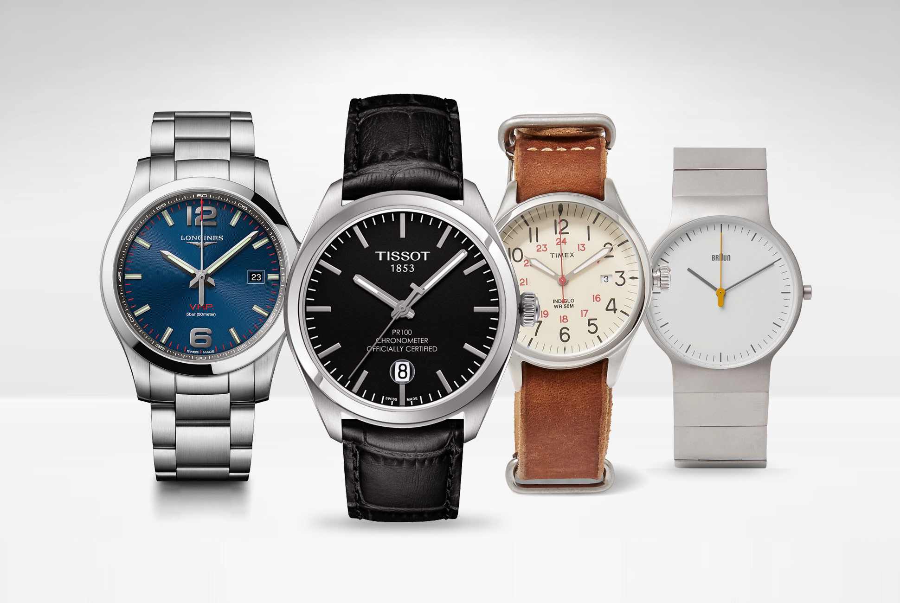

- 


Još 2017 godine se rodila ideja da pomažemo prijateljima i poznanicima u odabiru kvalitetnog ručnog sata, posebno medju muškom populacijom. Iako i tada kao relativni početnici u ovom svetu horologije, već smo tad imali pozitivan feedback na naš consulting. Kako se krug poznanstava širio vremenom, tako je i potreba postajala sve veća. Tako da posle par godina iskustava smo rešili da napravimo jednu interesantnu sveobuhvatnu stranicu sa interesantnim savetima pri odabiru kvalitetnog muškog ručnog sata, prilagodjenog za svačiji džep. Nadamo se da će Vam naši saveti biti od pomoći. Pišite nam na e-mail i ostavite Vaše komentare i sugestije. Sa poštovanjem Vaša Lisa i Monika !
Timex Scout
Američki brend sklapan u Maleziji po zahtevima američkog domaćeg tržišta. Brend sa jakim istorijskim nasledjem ,
dizajn prevashodno okrenut "field" i starim vojnim satovima. Prepoznatljiv po svom Indiglo pozadinskom osvetljenju,
sto ga stavlja u sam vrh praktičnih satova. Veoma atraktivni vintage dizajn u američkom stilu ga čini jako primamljivim.

Citizen ProMaster
Citizen Pro Master je trenutno najjeftiniji sertifikovani ronilački
sat. Naslednik legendarnog Marina Militare Citizen automatika samo sa savremenom solarnom
eco-drive tehnologijom. Vrlo praktičan i robustan sat sa odličnim
osvetljenjem, odličnom izradom kućišta i pravih 200m vodonepropustnosti,
čini ovaj sat pravim ronilačkim izborom.
Citizen Nighthawk
Godinama best-buy pilotski sat. Nighthawk je opremljen savremenom
eco-drive tehnologijom, GMT funkcijom, rotirajući unutrašnji prsten koji Vam može pomoći pri merenju
raznih stvari. Unikatan dizajn i savršen kvalitet izrade krase ovaj sat, kao i velika vodonepropustnost
kao na ronilačkim satovima.

Orient Kamasu
Vrhunski japanski ronilački sat za svaku priliku. Decenijama
sakriven iz Seiko konglomerata, ova sestrinska kompanija ništa ne zaostaje za svojim velikim bratom.
Kompanija koja uspešno razvija samostalno svoje mehanizme decenijama, oduvek je bila odličan izbor
odnosa cene i kvaliteta. Kamasu na japanskom znači "barakuda" i ovaj sat je to u pravom smislu reči.
Orient Bambino
Popularna serija Bambino ne prestaje da oduševljava javnost.
Godinama su izlazile generacije sa različitim prečnicima kućišta i dezena brojčanika, tako da svako
danas može sebi naći dobar "izlazni sat" za pristojnu količinu novca. Poslednja generacija ima zasebnu
malu sekundaru kao na starim satovima.

Vostok Amphibia
Ruski tenk u svetu satova. Napravljen za vreme 60tih,
da bude jeftin praktican i funkcionalan. Njegov dizajn Vas moze pogrešno zavarati, Vostok
je pouzdan, dizajniran za vojne svrhe, pun inventivnih rešenja, omiljen u svetu onih koji
vole modifikovane satove. Jednom rečju pravu vuk u jagnjećoj koži. Direktan predstavnik
Vostok satova je Meranom.